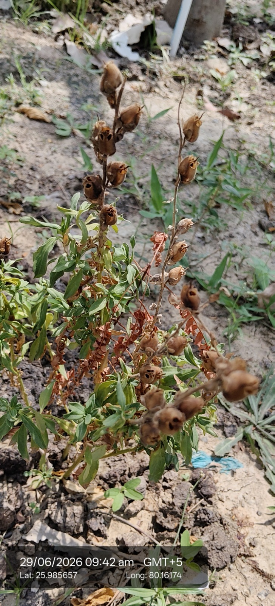

| Kingdom | Plantae |
|---|---|
| Genus | Antirrhinum |
| Species | Antirrhinum majus |
| Scientific name | Antirrhinum majus |
| Type | Annual or perennial herb, family Plantaginaceae |
| Category | Flowering / Ornamental |
Habitat & Growing Conditions
- Native to the Mediterranean region and North Africa; introduced as a garden ornamental and now widely cultivated across India as a winter annual. Thrives in cool to mild subtropical climate, preferring 10-25°C for best growth and flowering, and dying in summer heat above 35°C. Needs full sun in winter, tolerating light shade but flowering poorly in it. Prefers well-drained, fertile loamy soil rich in organic matter (pH 6.2-7.0) and does not tolerate waterlogging or heavy clay. Planted in home gardens, parks, flower beds, and pots; rarely naturalizes in India, self-seeding only in cool climates without becoming invasive. Life cycle: seeds sown Oct-Nov, flowers Dec-Mar, sets seed by Apr-May, then dies in summer heat.

Biodiversity Value
- Flowers attract bees and bumblebees, good for pollinator gardens in winter.
Economic & Ecological Importance
- Ornamental: Major winter-season garden flower in North India, valued for tall spikes of colourful, dragon-mouth shaped flowers in white, yellow, pink, red, and purple; used in beds, borders, and as cut flowers.
- Cut flower: Popular in floristry for bouquets and vase arrangements, with a good vase life of 7-10 days.
- Commercial floriculture: Sold as bedding and potted plants in nurseries from Nov-Feb, important for winter landscaping.
- Children's plant: Flowers can be gently squeezed to make the "dragon mouth" open and close, popular with kids.
- Mainly ornamental with no significant medicinal use in Indian traditional medicine; contains glycosides but seeds are not edible.
Visual record


